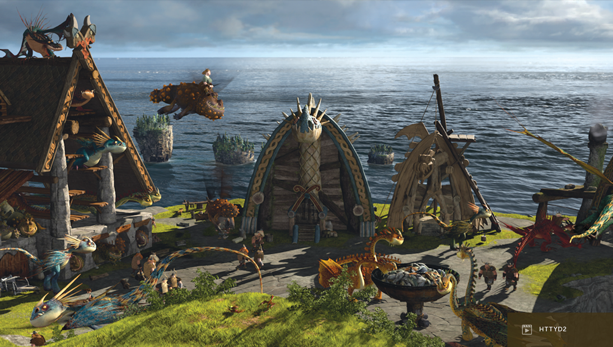

-
Berk
-
Overview: The home island of Hiccup and the Vikings. It's a
rugged, mountainous island with towering cliffs, surrounded by
the sea. Berk is known for its unpredictable weather and the
frequent presence of dragons.
-
Dragon's Nest
-
Overview: A volcanic island and home to the Red Death, the
massive dragon that forces other dragons to bring it food.
-
Forbidden Zone
-
Overview: Dangerous, uncharted areas outside of Berk where wild
dragons live.
-
Cove
-
Overview: A hidden, serene area near Berk where Hiccup first
interacts with Toothless.
-
Sea Stacks
-
Overview: Towering rock formations scattered in the ocean around
Berk.
The town of Berk
